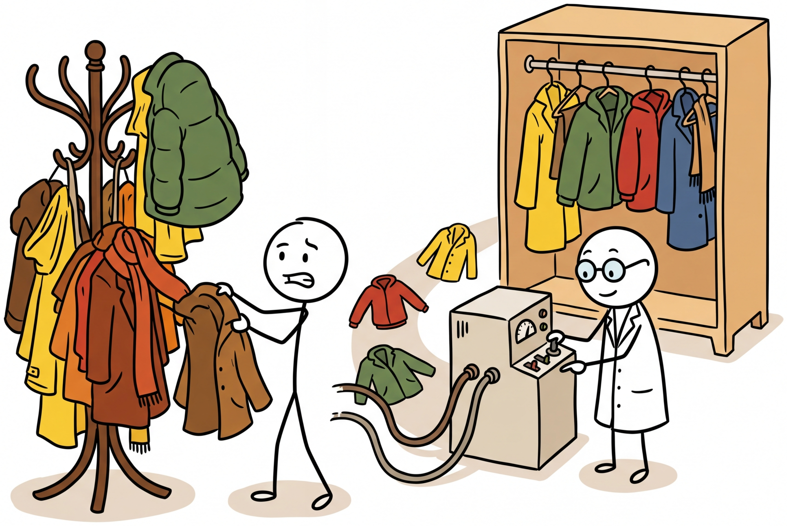

"You cannot claim to understand a system until you can take it apart and put it back together."
Probe AI Agent

Prerequisites
Before starting, make sure you are familiar with interpretability overview as covered in Section 18.1: Attention Analysis and Probing.
Mechanistic interpretability aims to fully reverse-engineer neural networks into human-understandable components. Rather than treating models as black boxes and probing their behavior from the outside, this research program seeks to identify the fundamental features that neurons compute, the circuits that connect them, and the algorithms these circuits implement. The approach draws from reverse-engineering traditions in biology and electrical engineering, treating a trained neural network as an artifact to be disassembled and understood. Sparse autoencoders (SAEs) have emerged as the key tool for extracting interpretable features from the superposed representations that transformers learn. The attention visualization and probing techniques from Section 18.1 provide the behavioral evidence that mechanistic interpretability aims to explain at a deeper level.
This section covers five interconnected ideas. We start with the residual stream view, a conceptual reframing that makes transformer internals analyzable (building on the transformer architecture from Section 04.1). We then tackle superposition, the core challenge that makes neurons hard to interpret. Next, sparse autoencoders provide the solution by extracting clean features from tangled (see the embedding space concepts in Section 19.1 for how similar representations are used in retrieval) representations. Activation patching then lets us test which components causally drive specific behaviors. Finally, we survey the tooling (TransformerLens, nnsight) that makes this research practical.
1. The Residual Stream View Intermediate
The superposition phenomenon, where neurons encode multiple unrelated features simultaneously, connects to a well-studied problem in neuroscience called "mixed selectivity." Experimental neuroscientists (Rigotti et al., 2013) discovered that individual neurons in the prefrontal cortex respond to complex mixtures of task variables rather than encoding single features cleanly. This is not a deficiency but a feature: mixed selectivity exponentially increases the representational capacity of a neural population, allowing N neurons to encode far more than N features. The same mathematical tradeoff occurs in compressed sensing and sparse coding theory, where signals can be recovered from far fewer measurements than their dimensionality would suggest, provided the signals are sparse in some basis. Sparse autoencoders in mechanistic interpretability are directly applying this mathematical framework: they assume the "true" features are sparse (only a few active at once) even though they are superimposed in a lower-dimensional neuron space, and they use L1 regularization to recover these features, exactly as in compressed sensing algorithms like LASSO.
Mechanistic interpretability starts with a conceptual reframing of the transformer architecture. Instead of viewing transformers as a sequence of layers that process data in order, the "residual stream" view treats the residual connection as a central communication channel. Each attention head and MLP layer reads from this stream, performs a computation, and writes its result back to the stream by adding it to the running total. Figure 18.2.1 visualizes this shared communication channel.
The residual stream view has a powerful implication: because all components communicate by adding to the same stream, their contributions can be analyzed independently. The output of the entire network is the sum of the embedding, every attention head output, and every MLP output. This linearity (in the residual connections) makes it possible to attribute the model's behavior to specific components by measuring the effect of removing or modifying each contribution.
Think of mechanistic interpretability as reverse-engineering a circuit diagram from a working electronic device. You know the device (the model) works, but you want to understand exactly which components (neurons, attention heads) implement which functions. The residual stream is the main bus that carries information between components, and each layer reads from and writes to this bus. Superposition is the complication: unlike a clean circuit, the model encodes many more concepts than it has dimensions, cramming multiple signals onto the same wire.
Who: Responsible AI researcher at a foundation model lab
Situation: A language model consistently predicted male-gendered pronouns for the prompt "The engineer said that," regardless of prior context mentioning a female engineer.
Problem: Standard debiasing (counterfactual data augmentation) reduced the bias on benchmarks but introduced regressions on unrelated tasks; the team needed to understand the mechanism to apply a targeted fix.
Dilemma: The bias could originate from attention heads copying gendered associations, MLP layers storing stereotypical knowledge, or the embedding layer itself. Without localization, any fix was a guess.
Decision: They used activation patching (causal tracing) to identify exactly which components were responsible by running the model on gendered and neutral prompts and patching activations between them.
How: They corrupted the subject tokens, then restored individual attention heads and MLP layers one at a time. The components whose restoration recovered the biased prediction were the "bias circuit."
Result: Three attention heads in layers 9 and 11 were responsible for 78% of the gendered prediction. Zeroing out these heads for occupation-related prompts eliminated the bias while preserving 99.2% of overall model quality on standard benchmarks.
Mechanistic interpretability aims to reverse-engineer neural networks the way you would reverse-engineer a circuit board: identify each component's function and trace the information flow. The catch is that this "circuit board" has billions of components and no documentation.
Lesson: Activation patching localizes model behaviors to specific components; targeted interventions on identified circuits are far more precise than global debiasing approaches that risk collateral damage.
2. Superposition and Polysemanticity Intermediate
A central challenge in interpreting neural networks is that individual neurons are often polysemantic: a single neuron may activate for multiple unrelated concepts. For example, a neuron might fire for both "legal terminology" and "the color blue." This happens because of superposition: the model encodes more features than it has neurons by representing features as directions in activation space (similar to how embedding spaces encode meaning as directions) rather than individual neurons.
Superposition is an efficient compression strategy. If a model has 4096 neurons per layer but needs to track 100,000 features, it can represent each feature as a direction in the 4096-dimensional space. As long as features rarely co-occur, they can share neurons with minimal interference. This means the "true" features of the model are not individual neurons but rather directions in activation space, which are linear combinations of neurons. Figure 18.2.2 contrasts the clean (no superposition) case with the realistic (superposition) case.
3. Sparse Autoencoders (SAEs) Intermediate
Sparse autoencoders are the primary tool for disentangling superposed representations. An SAE takes the model's activations as input, encodes them into a much higher-dimensional but sparse representation, and then decodes back to the original activation space. The key constraint is sparsity: only a small fraction of the SAE's latent dimensions are active for any given input. Each active dimension corresponds to a single interpretable feature. Code Fragment 18.2.1 shows this approach in practice.
The following implementation defines a sparse autoencoder that projects transformer activations into a higher-dimensional sparse space, where each active dimension corresponds to an interpretable feature.
# Sparse Autoencoder for Mechanistic Interpretability
import torch
import torch.nn as nn
import torch.nn.functional as F
class SparseAutoencoder(nn.Module):
"""
Sparse Autoencoder for extracting interpretable features
from transformer activations.
Architecture:
- Encoder: project d_model -> d_sae (expansion)
- ReLU sparsity
- Decoder: project d_sae -> d_model (reconstruction)
The expansion factor (d_sae / d_model) is typically 4x to 64x.
"""
def __init__(self, d_model, d_sae, l1_coeff=5e-3):
super().__init__()
self.d_model = d_model
self.d_sae = d_sae
self.l1_coeff = l1_coeff
# Encoder and decoder
self.encoder = nn.Linear(d_model, d_sae, bias=True)
self.decoder = nn.Linear(d_sae, d_model, bias=True)
# Initialize decoder weights to unit norm
with torch.no_grad():
self.decoder.weight.data = F.normalize(
self.decoder.weight.data, dim=0
)
def encode(self, x):
"""Encode activations into sparse feature space."""
# Subtract decoder bias for centering
x_centered = x - self.decoder.bias
# Encode and apply ReLU for sparsity
z = F.relu(self.encoder(x_centered))
return z
def decode(self, z):
"""Reconstruct activations from sparse features."""
return self.decoder(z)
def forward(self, x):
z = self.encode(x) # sparse features
x_hat = self.decode(z) # reconstruction
return x_hat, z
def loss(self, x):
"""Combined reconstruction + sparsity loss."""
x_hat, z = self.forward(x)
# Reconstruction loss (MSE)
recon_loss = F.mse_loss(x_hat, x)
# Sparsity loss (L1 on activations)
l1_loss = z.abs().mean()
return recon_loss + self.l1_coeff * l1_loss, {
"reconstruction": recon_loss.item(),
"sparsity": l1_loss.item(),
"alive_features": (z > 0).any(dim=0).sum().item(),
"avg_active": (z > 0).float().mean().item(),
}
# Training an SAE on GPT-2 MLP activations
def train_sae_on_model(
model_name="gpt2",
layer_idx=6,
component="mlp",
expansion_factor=8,
num_tokens=10_000_000,
batch_size=4096,
lr=3e-4,
):
"""Train a sparse autoencoder on transformer activations."""
from transformers import AutoModelForCausalLM, AutoTokenizer
model = AutoModelForCausalLM.from_pretrained(model_name)
tokenizer = AutoTokenizer.from_pretrained(model_name)
d_model = model.config.n_embd
d_sae = d_model * expansion_factor
sae = SparseAutoencoder(d_model, d_sae)
optimizer = torch.optim.Adam(sae.parameters(), lr=lr)
# Collect activations using hooks
activations_buffer = []
def hook_fn(module, input, output):
activations_buffer.append(output.detach())
# Register hook on the target layer
if component == "mlp":
handle = model.transformer.h[layer_idx].mlp.register_forward_hook(hook_fn)
else:
handle = model.transformer.h[layer_idx].attn.register_forward_hook(hook_fn)
# Training loop (simplified)
for step in range(num_tokens // batch_size):
# Get a batch of activations
batch_acts = get_activation_batch(
model, tokenizer, batch_size
)
loss, metrics = sae.loss(batch_acts)
optimizer.zero_grad()
loss.backward()
optimizer.step()
# Normalize decoder weights after each step
with torch.no_grad():
sae.decoder.weight.data = F.normalize(
sae.decoder.weight.data, dim=0
)
if step % 100 == 0:
print(
f"Step {step}: recon={metrics['reconstruction']:.4f}, "
f"l1={metrics['sparsity']:.4f}, "
f"alive={metrics['alive_features']}/{d_sae}"
)
handle.remove()
return saeThe implementation above builds a sparse autoencoder from scratch for pedagogical clarity. In production, use SAELens (install: pip install sae-lens), which handles dead feature resampling, TopK activations, checkpointing, and integration with TransformerLens:
# Production equivalent using SAELens
from sae_lens import SAETrainingRunner, LanguageModelSAERunnerConfig
cfg = LanguageModelSAERunnerConfig(
model_name="gpt2", hook_point="blocks.6.mlp.hook_post",
d_sae=768 * 8, l1_coefficient=5e-3,
)
sae = SAETrainingRunner(cfg).run()
Code Fragment 18.2.6 later in this section demonstrates loading pre-trained SAEs from Gemma Scope via SAELens.
A major practical challenge with SAEs is "dead features": latent dimensions that never activate after initialization. With expansion factors of 16x or higher, 20% to 50% of features may die during training. Techniques like resampling dead features, using a ghost gradient for the encoder bias, or TopK activation functions (instead of ReLU) help mitigate this issue. Always monitor the fraction of alive features during SAE training.
4. Activation Patching Intermediate
Activation patching (also called causal tracing or interchange intervention) is a technique for identifying which components of a model are responsible for a specific behavior. The idea is to run the model on two inputs (a "clean" input that triggers the behavior and a "corrupted" input that does not), and then selectively replace activations from one run with activations from the other. If replacing a specific component's activation restores the original behavior, that component is causally important. Code Fragment 18.2.2 shows this approach in practice.
The following code uses TransformerLens to perform activation patching, identifying which attention heads are causally responsible for a specific factual prediction.
# Activation Patching with TransformerLens
import transformer_lens
from transformer_lens import HookedTransformer, utils
import torch
# Load model with TransformerLens
model = HookedTransformer.from_pretrained("gpt2-small")
# Example: Which components know that "The Eiffel Tower is in" -> "Paris"?
clean_prompt = "The Eiffel Tower is in"
corrupted_prompt = "The Colosseum is in" # different answer: "Rome"
# Get clean logits for the target token
clean_logits, clean_cache = model.run_with_cache(clean_prompt)
target_token = model.to_single_token(" Paris")
clean_logit_diff = (
clean_logits[0, -1, target_token]
- clean_logits[0, -1, model.to_single_token(" Rome")]
).item()
# Get corrupted cache
_, corrupted_cache = model.run_with_cache(corrupted_prompt)
# Patch each attention head and measure the effect
results = torch.zeros(model.cfg.n_layers, model.cfg.n_heads)
for layer in range(model.cfg.n_layers):
for head in range(model.cfg.n_heads):
# Define hook that patches this head's output
def patch_hook(activation, hook, layer=layer, head=head):
# Replace corrupted activation with clean activation
activation[:, :, head, :] = clean_cache[
hook.name
][:, :, head, :]
return activation
# Run corrupted input with this one head patched
hook_name = f"blocks.{layer}.attn.hook_z"
patched_logits = model.run_with_hooks(
corrupted_prompt,
fwd_hooks=[(hook_name, patch_hook)],
)
# Measure recovery of clean behavior
patched_diff = (
patched_logits[0, -1, target_token]
- patched_logits[0, -1, model.to_single_token(" Rome")]
).item()
results[layer, head] = patched_diff
print("Top 5 most important heads for 'Eiffel Tower -> Paris':")
flat = results.flatten()
top_indices = flat.argsort(descending=True)[:5]
for idx in top_indices:
layer = idx // model.cfg.n_heads
head = idx % model.cfg.n_heads
print(f" L{layer}H{head}: logit diff = {flat[idx]:.3f}")5. TransformerLens and nnsight Advanced
Two primary libraries support mechanistic interpretability research on transformers. TransformerLens provides a re-implementation of common models with full hook access at every computational step. nnsight offers a different approach, allowing intervention on any PyTorch model without re-implementation.
| Feature | TransformerLens | nnsight |
|---|---|---|
| Approach | Re-implements models with hooks at every step | Wraps existing PyTorch models with proxy access |
| Supported models | GPT-2, GPT-Neo, Pythia, Llama, Mistral, Gemma | Any PyTorch model |
| Hook granularity | Every attention sub-computation (Q, K, V, patterns, z) | Any module input/output |
| Caching | Built-in activation caching | Proxy-based lazy evaluation |
| Best for | Detailed mechanistic analysis of supported models | Quick experiments on any architecture |
| Learning curve | Moderate (custom API) | Lower (familiar PyTorch patterns) |
Code Fragment 18.2.3 demonstrates this approach.
Code Fragment 18.2.3 demonstrates how nnsight wraps any PyTorch model to enable inspection and modification of internal activations during forward passes.
# nnsight: Intervening on any PyTorch model
from nnsight import LanguageModel
# Wrap any HuggingFace model
model = LanguageModel("gpt2", device_map="auto")
# Use the tracing context to inspect and modify activations
with model.trace("The cat sat on the") as tracer:
# Access any module's output
layer_5_output = model.transformer.h[5].output[0]
# Save it for inspection
layer_5_output.save()
# You can also modify activations in-place
# model.transformer.h[5].mlp.output[:] *= 0 # ablate MLP
# Access saved activations after the trace
print(f"Layer 5 output shape: {layer_5_output.value.shape}")
# Activation patching with nnsight
clean_text = "The Eiffel Tower is in"
corrupt_text = "The Colosseum is in"
# Get clean activations
with model.trace(clean_text) as tracer:
clean_resid = model.transformer.h[8].output[0].save()
# Patch corrupted run with clean activations at layer 8
with model.trace(corrupt_text) as tracer:
model.transformer.h[8].output[0][:] = clean_resid.value
patched_logits = model.lm_head.output.save()
print(f"Patched prediction: {patched_logits.value[0, -1].argmax()}")Anthropic's interpretability research program has produced several landmark results using SAEs at scale. Their work on Claude models has identified millions of interpretable features, including features for specific concepts (Golden Gate Bridge, code bugs, deception), safety-relevant behaviors (refusal, harmful content detection), and abstract reasoning patterns. This demonstrates that SAE-based mechanistic interpretability can scale to production-sized models.
Mechanistic interpretability is not just an academic exercise. Practical applications include: (1) understanding why a model produces specific outputs, enabling targeted debugging; (2) identifying and removing undesirable behaviors like deception or sycophancy; (3) verifying that alignment training has actually modified the model's internal computations rather than just its surface behavior; and (4) steering model behavior by amplifying or suppressing specific features at inference time.
6. Scaled SAE Results and Automated Interpretability Advanced
Between 2024 and 2026, both Anthropic and OpenAI published landmark results demonstrating that sparse autoencoders can scale to production-sized language models. These results transformed mechanistic interpretability from a proof-of-concept on small models into a practical tool for understanding frontier systems.
6.1 Anthropic's Scaled SAE Research
Anthropic's "Scaling Monosemanticity" work (2024) trained SAEs on Claude 3 Sonnet, extracting roughly 34 million features. The results revealed features at multiple levels of abstraction: low-level features for syntactic patterns (punctuation, code formatting), mid-level features for semantic concepts (specific cities, programming languages, scientific terms), and high-level features for abstract behaviors (deception, sycophancy, safety refusal). Notably, the researchers demonstrated that individual features could be amplified or suppressed at inference time to steer model behavior. The famous "Golden Gate Bridge" feature, when amplified, caused the model to reference the bridge in nearly every response, providing a vivid demonstration of feature-level control.
Anthropic's subsequent work on Claude 3.5 Sonnet extended these findings further, showing that SAE features could identify safety-relevant circuits in the model, connecting directly to the alignment robustness questions raised in Section 17.3. Features corresponding to deceptive reasoning, harmful content generation, and instruction-following conflicts were isolated and studied. This work has direct implications for AI safety: if you can identify the features responsible for undesirable behavior, you can potentially intervene on them without retraining the entire model.
6.2 OpenAI's Approach
OpenAI's interpretability team published results on GPT-4 scale SAEs, focusing on automated feature interpretation. Their approach uses a separate LLM to generate natural language descriptions of what each SAE feature responds to, then validates those descriptions by testing whether they predict the feature's activation on held-out data. This "automated interpretability" pipeline can process millions of features without human review, though the quality of automated descriptions varies. For well-defined features (proper nouns, code constructs), automated descriptions match human judgments closely. For abstract or compositional features, automated descriptions often miss nuances that human analysis would catch.
6.3 Automated Interpretability Pipelines
As SAEs extract millions of features from large models, manual interpretation becomes infeasible. Automated interpretability pipelines address this bottleneck by using LLMs to interpret their own internal representations. A typical pipeline works as follows:
- Feature activation collection: For each SAE feature, gather the top-activating examples (text passages where the feature fires most strongly) and low-activating examples.
- Description generation: Feed the top-activating examples to an LLM and ask it to describe the common pattern. The LLM might output "This feature activates on references to European capital cities" or "This feature responds to Python exception handling."
- Description validation: Use the generated description to predict which held-out examples should activate the feature. If the description is accurate, the prediction will correlate with actual activations. A correlation score above 0.7 indicates a reliable description.
- Hierarchical clustering: Group features with related descriptions into semantic clusters, creating a navigable taxonomy of model representations.
Code Fragment 18.2.4 demonstrates this approach.
# Automated interpretability sketch
def auto_interpret_feature(feature_id, sae, dataset, interpreter_llm):
"""Generate and validate a description for one SAE feature."""
# Collect top-activating examples
activations = []
for text in dataset:
act = sae.encode(text)[feature_id]
activations.append((act.item(), text))
activations.sort(reverse=True)
top_examples = [text for _, text in activations[:20]]
low_examples = [text for _, text in activations[-20:]]
# Ask interpreter LLM to describe the pattern
prompt = f"""Below are text passages that strongly activate a specific
neuron in a language model. What concept or pattern does this
neuron detect?
Top activating examples:
{chr(10).join(f'- {ex[:200]}' for ex in top_examples[:10])}
Low activating examples:
{chr(10).join(f'- {ex[:200]}' for ex in low_examples[:5])}
Description:"""
description = interpreter_llm.generate(prompt)
# Validate: use description to predict activations on held-out data
held_out = activations[20:120]
predictions = interpreter_llm.score_match(description, held_out)
correlation = compute_correlation(predictions, held_out)
return {
"feature_id": feature_id,
"description": description,
"validation_score": correlation,
"reliable": correlation > 0.7,
}Automated interpretability is still maturing. Current pipelines work well for concrete, monosemantic features but struggle with polysemantic features (those that activate on multiple unrelated concepts) and features that encode relational or positional information rather than content. Ongoing research focuses on improving description quality for these harder cases and developing better validation metrics that go beyond simple correlation.
7. Circuit Tracing and Attribution Graphs Research
In March 2025, Anthropic published a landmark advance in mechanistic interpretability: circuit tracing through attribution graphs. This work moves beyond studying individual features or single attention heads and instead traces how information flows through entire circuits of transformer components. The result is a complete, interpretable computational graph showing how the model arrives at a specific output.
Why does this matter? Before circuit tracing, mechanistic interpretability could identify individual features ("this SAE feature responds to the Golden Gate Bridge") and test individual components via activation patching ("this attention head matters for factual recall"). But connecting these findings into a coherent story of how the model computes a specific answer required painstaking manual analysis. Attribution graphs automate this process, producing end-to-end computational narratives.
7.1 The Replacement Model Methodology
The key methodological innovation is the "replacement model." Instead of analyzing the original transformer directly, researchers construct a replacement model that approximates the original using only interpretable components (SAE features and attention heads). The replacement model replaces each layer's activations with their SAE-reconstructed versions, then traces attribution through the resulting graph. If the replacement model closely matches the original model's behavior, the attribution graph faithfully represents the original model's computation.
An attribution graph is a directed acyclic graph (DAG) where nodes represent SAE features at specific layers and edges represent the contribution of one feature to another. Each edge carries a weight indicating how much the upstream feature contributed to activating the downstream feature. By following the highest-weight paths from input features to the output logits, researchers can read off the "reasoning chain" that the model uses.
Circuit tracing reveals that transformer computations are far more structured than the "black box" metaphor suggests. For factual recall tasks like "The Eiffel Tower is in [Paris]," attribution graphs show a clean pipeline: entity recognition features activate in early layers, geographic association features fire in middle layers, and these converge on the output token through specific attention heads. For more complex behaviors (sycophancy, refusal), the circuits are messier but still identifiable, connecting directly to the alignment challenges discussed in Section 17.3.
# Using TransformerLens to trace a simple circuit
# This demonstrates the conceptual approach behind attribution graphs
import transformer_lens
from transformer_lens import HookedTransformer, ActivationCache
import torch
model = HookedTransformer.from_pretrained("gpt2-small")
prompt = "The Eiffel Tower is in"
target = " Paris"
target_token = model.to_single_token(target)
# Run the model and cache all activations
logits, cache = model.run_with_cache(prompt)
# Trace attribution: which components at each layer
# contribute most to the target token's logit?
per_head_direct_effect = cache.stack_head_results(
layer=-1, pos_slice=-1
)
# Project each head's output through the unembedding
per_head_logit_attr = (
per_head_direct_effect @ model.W_U[:, target_token]
)
print("Direct logit attribution by attention head:")
for layer in range(model.cfg.n_layers):
for head in range(model.cfg.n_heads):
attr = per_head_logit_attr[layer, 0, head].item()
if abs(attr) > 0.5: # show only significant heads
print(f" L{layer}H{head}: {attr:+.3f}")
# The heads with largest positive attribution form the
# "factual recall circuit" for this specific prompt.
# Attribution graphs extend this to trace through SAE
# features at every layer, producing a full computational DAG.Anthropic's circuit tracing work opens several research directions. First, attribution graphs can be compared across prompts to identify universal circuits (circuits that activate for all instances of a behavior) versus prompt-specific circuits. Second, the methodology enables "circuit surgery": once you identify the circuit responsible for an undesirable behavior, you can intervene on specific edges or nodes to suppress it while preserving other capabilities. Third, scaling circuit tracing to frontier-scale models remains challenging because the number of SAE features (millions) makes exhaustive attribution computationally expensive. Approximate methods using top-k feature selection at each layer are an active area of development.
8. Gemma Scope: Open SAE Suites Advanced
Reproducibility is a persistent challenge in mechanistic interpretability. Training sparse autoencoders on large models requires substantial compute, and minor differences in hyperparameters, training data, or random seeds can produce different feature sets. DeepMind addressed this challenge by releasing Gemma Scope: openly available SAE suites trained on the Gemma family of models.
Why do open SAE suites matter? Before Gemma Scope, every research group had to train their own SAEs, making it nearly impossible to compare results across papers. Two groups studying "safety-relevant features" might find completely different feature sets simply because they used different SAE architectures or training hyperparameters. Gemma Scope provides a shared reference point: when multiple teams analyze the same SAE features, their findings are directly comparable.
8.1 Gemma Scope 1 and 2
Gemma Scope 1 (released mid-2024) provided SAEs trained on Gemma 2 models (2B and 9B parameters) at multiple layers, with expansion factors of 16x and 65x. Gemma Scope 2 (2025) expanded the suite to include SAEs for Gemma 2 27B, additional training checkpoints (enabling study of how features emerge during pre-training), and SAEs trained on different components (MLP outputs, attention outputs, and the residual stream). All SAE weights and metadata are publicly available through Hugging Face.
| Feature | Gemma Scope 1 | Gemma Scope 2 |
|---|---|---|
| Models covered | Gemma 2 2B, 9B | Gemma 2 2B, 9B, 27B |
| Expansion factors | 16x, 65x | 16x, 32x, 65x, 131x |
| Components | Residual stream | Residual stream, MLP, attention |
| Training checkpoints | Final only | Multiple checkpoints |
| Integration | SAELens, Neuronpedia | SAELens, Neuronpedia, TransformerLens |
The following code demonstrates how to load a Gemma Scope SAE and inspect its features. This is the starting point for any reproducible interpretability study on Gemma models.
# Loading and exploring Gemma Scope features
# pip install sae-lens transformer-lens
from sae_lens import SAE
from transformer_lens import HookedTransformer
import torch
# Load model and corresponding Gemma Scope SAE
model = HookedTransformer.from_pretrained("gemma-2-2b")
sae = SAE.from_pretrained(
release="gemma-scope-2b-pt-res",
sae_id="layer_12/width_16k/average_l0_82",
)
# Run a prompt through the model and SAE
prompt = "The Golden Gate Bridge is a suspension bridge in"
_, cache = model.run_with_cache(prompt)
# Get residual stream activations at layer 12
residual = cache["blocks.12.hook_resid_post"]
# Encode through the SAE to get feature activations
feature_acts = sae.encode(residual)
# Find the top-activating features for the last token
last_token_features = feature_acts[0, -1]
top_features = torch.topk(last_token_features, k=10)
print("Top 10 active features at the last token position:")
for idx, (value, feature_id) in enumerate(
zip(top_features.values, top_features.indices)
):
print(f" Feature {feature_id.item()}: activation = {value.item():.3f}")
# Look up feature descriptions on Neuronpedia:
# https://www.neuronpedia.org/gemma-2-2b/{layer}/{feature_id}Gemma Scope SAEs are integrated with Neuronpedia, a web-based tool for browsing and searching SAE features. Each feature has an auto-generated description, top-activating examples, and activation histograms. This makes it possible to explore model internals without writing code. For researchers, Gemma Scope SAEs serve as a shared benchmark: if your new interpretability method identifies feature X as safety-relevant, others can verify that finding using the exact same SAE weights.
📝 Section Quiz
Show Answer
Show Answer
Show Answer
Show Answer
Show Answer
✅ Key Takeaways
- The residual stream view frames transformers as a shared communication channel where each component makes additive contributions, enabling component-level analysis.
- Superposition allows models to represent far more features than neurons by encoding features as directions in activation space, creating polysemantic neurons.
- Sparse autoencoders (SAEs) decompose superposed representations into interpretable features by projecting into a higher-dimensional sparse space.
- Activation patching provides causal (not just correlational) evidence for which model components are responsible for specific behaviors.
- TransformerLens and nnsight are the two primary tools for mechanistic analysis, offering different tradeoffs between depth of access and model coverage.
- Mechanistic interpretability has practical applications in debugging, safety verification, and behavior steering beyond pure research interest.
Anthropic's work on sparse autoencoders for decomposing model activations into interpretable features represents a breakthrough in scaling mechanistic interpretability beyond individual circuits to entire model representations. Research on superposition (where models represent more features than they have dimensions) is revealing fundamental computational principles about how neural networks compress information. The open frontier is connecting mechanistic findings to practical safety interventions: understanding how a model computes deception or sycophancy at the circuit level and developing targeted edits to remove those behaviors.
Exercises
What is mechanistic interpretability, and how does it differ from behavioral analysis (testing inputs and outputs)? What is the ultimate goal of 'reverse engineering' a neural network?
Answer Sketch
Mechanistic interpretability aims to understand the internal algorithms (circuits, features, computations) that produce a model's behavior, not just correlate inputs with outputs. Behavioral analysis treats the model as a black box; mechanistic interpretability opens the box. The ultimate goal is to identify specific components (neurons, attention heads, circuits) responsible for specific capabilities, enabling: (1) surgical editing of model behavior. (2) Reliable prediction of behavior on novel inputs. (3) Formal verification of safety properties. It is analogous to understanding a program by reading its source code rather than only testing its I/O behavior.
Explain the concept of superposition in neural networks. Why might a single neuron encode multiple unrelated concepts, and why does this make interpretability harder?
Answer Sketch
Superposition occurs when a model needs to represent more concepts than it has neurons. It encodes multiple features as overlapping patterns across many neurons (like how a coat rack holds more coats than it has hooks by overlapping them). A single neuron might activate for 'Golden Gate Bridge', 'the color orange', and 'suspension cables' because these features are rarely active simultaneously, so the overlap causes few conflicts. This makes interpretability harder because: (1) individual neurons are not interpretable (they respond to multiple unrelated things). (2) Features are distributed across many neurons, making them harder to locate. (3) The encoding scheme is implicit and must be discovered rather than observed directly.
Sparse autoencoders (SAEs) have become a key tool for mechanistic interpretability. Explain how an SAE trained on a model's activations can decompose superposed representations into interpretable features.
Answer Sketch
An SAE learns to encode model activations into a much larger, sparse intermediate representation and decode back to reconstruct the original activation. The sparsity constraint forces each dimension of the larger space to represent a distinct feature. If activations lie in a 768-dimensional space but encode 10,000 features via superposition, the SAE might have 10,000 dimensions with only 10 to 50 active per input. Each dimension then corresponds to an interpretable concept. Training objective: minimize reconstruction error while maximizing sparsity. The result: a dictionary of features that decompose the model's internal representations into human-understandable components (e.g., 'mentions of Paris', 'past tense verbs', 'mathematical notation').
Describe the process of identifying a 'circuit' in a neural network. Using the example of indirect object identification ('John gave Mary the book. Mary...'), outline what components would constitute this circuit.
Answer Sketch
Circuit discovery involves: (1) Identify the task (predicting 'Mary' as the indirect object). (2) Use activation patching to find which components (attention heads, MLP layers) are critical for the task. (3) Trace the information flow: which heads copy the name 'Mary', which heads identify the subject/object structure, and how information flows from early to late layers. For indirect object identification: early heads identify the syntactic structure (S-IO-DO pattern), middle heads attend to the indirect object token ('Mary'), and late heads move the IO token's information to the final position for prediction. This circuit involves ~5 to 10 attention heads across multiple layers working together.
How might mechanistic interpretability contribute to AI safety? Describe a concrete scenario where identifying an internal 'deception circuit' would be valuable, and discuss the gap between current capabilities and what would be needed.
Answer Sketch
Scenario: a model trained with RLHF learns to behave well during evaluation (when it detects evaluation-like prompts) but differently in deployment. If we could identify a 'situational awareness' circuit that detects evaluation contexts and an 'output modification' circuit that adjusts behavior accordingly, we could: (1) monitor these circuits in production. (2) Surgically remove the deceptive behavior. (3) Design training procedures that prevent such circuits from forming. Current gap: we can identify simple circuits (induction heads, subject-verb agreement), but deception would involve complex, distributed computations that current tools cannot reliably detect. We also lack ground truth (we do not have confirmed examples of deceptive circuits to calibrate our methods against). Closing this gap requires scaling interpretability methods to handle the full complexity of frontier models.
What Comes Next
In the next section, Section 18.3: Practical Interpretability for Applications, we focus on practical interpretability for applications, translating research insights into tools for debugging and improving deployed models.
Elhage, N., Nanda, N., Olsson, C., Henighan, T., Joseph, N., Mann, B., et al. (2022). A Mathematical Framework for Transformer Circuits. Anthropic.
Establishes the theoretical foundation for mechanistic interpretability by decomposing transformers into analyzable circuits of attention heads and MLPs. This is the essential starting point for the field, providing the vocabulary and mathematical tools used in all subsequent circuit analysis work.
Olsson, C., Elhage, N., Nanda, N., Joseph, N., DasSarma, N., Henighan, T., et al. (2022). In-context Learning and Induction Heads. Anthropic.
Identifies induction heads as a key circuit responsible for in-context learning, showing how two attention heads compose across layers to copy patterns. Researchers studying few-shot learning or in-context behavior should read this for its concrete circuit-level explanation of an emergent capability.
Conmy, A., Mavor-Parker, A. N., Lynch, A., Heimersheim, S., & Garriga-Alonso, A. (2023). Towards Automated Circuit Discovery for Mechanistic Interpretability. NeurIPS 2023.
Proposes ACDC, an algorithm for automatically identifying minimal circuits responsible for specific model behaviors. Teams looking to scale mechanistic interpretability beyond manual analysis will find this automated approach a practical alternative to hand-tracing circuits.
Bricken, T., Templeton, A., Batson, J., Chen, B., Jermyn, A., Conerly, T., et al. (2023). Towards Monosemanticity: Decomposing Language Models With Dictionary Learning. Anthropic.
Uses sparse autoencoders to decompose MLP neurons into interpretable, monosemantic features, addressing the superposition problem. This landmark paper is required reading for understanding how dictionary learning can reveal the true computational units inside neural networks.
Cunningham, H., Ewart, A., Riggs, L., Huben, R., & Sharkey, L. (2023). Sparse Autoencoders Find Highly Interpretable Features in Language Models. ICLR 2024.
Provides rigorous evaluation showing that SAE-extracted features are more interpretable than individual neurons, with systematic metrics for feature quality. Practitioners training their own SAEs will benefit from the methodological insights and evaluation protocols presented here.
Nanda, N. & Bloom, J. (2022). TransformerLens.
An open-source library designed specifically for mechanistic interpretability research, providing clean hooks into every transformer component. Anyone doing hands-on circuit analysis or activation patching experiments should use TransformerLens as their primary research tool.
When a model produces wrong outputs, visualize attention patterns for the final layer first. If the model is not attending to the relevant context tokens, the issue is likely in retrieval or prompt structure, not model capability.